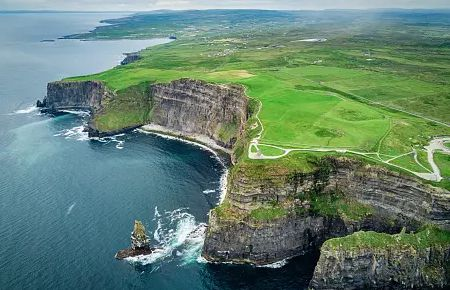
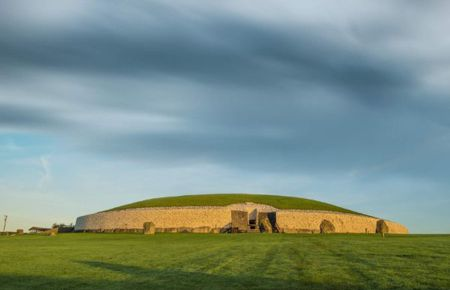

As Falésias de Moher representam o encontro dramático entre os campos verdejantes da Irlanda e o ímpeto do Oceano Atlântico, elevando-se em paredes verticais de rocha que ultrapassam os 200 metros de altura. A imagem captura a grandiosidade da costa oeste do país, destacando formações geológicas milenares, como as torres de pedra isoladas no mar, e as trilhas sinuosas que oferecem uma das vistas panorâmicas mais icônicas e selvagens da Europa.
Conheça maisEste grandioso edifício de pedra, com suas colunas clássicas e o distintivo relógio de face azul embutido no frontão, é um símbolo da histórica e prestigiada universidade, fundada em 1592. O caminho de paralelepípedos e os gramados verdes, ladeados por postes de luz tradicionais e pedestres, transmitem a atmosfera movimentada e acadêmica de um local que combina séculos de tradição com a vida cotidiana vibrante de Dublin.
Conheça mais
A imagem retrata o monumento pré-histórico de Newgrange, situado no Vale do Boyne, na Irlanda, um tumba de passagem neolítica que é mais antiga que as Pirâmides de Gizé e o Stonehenge. Com sua fachada circular distinta de pedras de quartzo branco e sua cobertura de grama perfeitamente integrada à paisagem, o local é mundialmente famoso pelo seu alinhamento astronômico preciso, onde, durante o solstício de inverno, a luz do sol nascente penetra por uma abertura acima da entrada para iluminar a câmara central.
Conheça mais